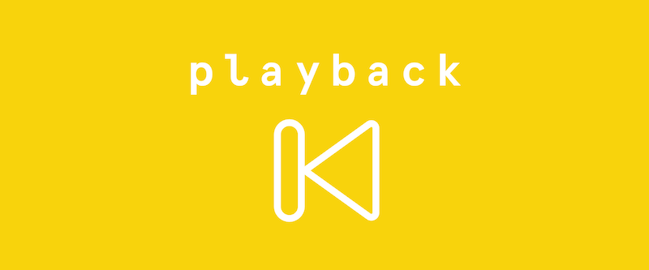
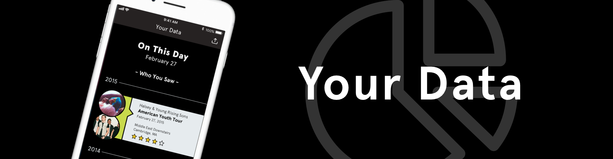

Playback is all about curating a list of the concerts you have attended! Many people hold on to the ticket stubs from concerts as a way to remember those shows they have seen and enjoyed throughout their life. This can easily become quite jumbled after that collection begins to grow too big.
By connecting to accounts from Facebook, Spotify, Ticketmaster, and Bandsintown, the app can help by automatically add any new shows to your list. It would do so through check-ins or RSVPs from these accounts.
Besides just collecting a long list of shows, Playback gives you access to a number of details from the night. Curated from online posts located at your specific concert, things like photo and video galleries can be found within the details pages.
Users are also allowed to give each show a rating. This allows for someone to further remember the night, as they will be able to recall how much fun they actually had!
Rating your concert experience becomes important under the data tab. This is a great place to see an overall view of all your shows. Different sections include “On This Day,” top rated concerts, popular artists or genres, and frequent locations. This becomes an answer to the dreaded question, “What kind of music do you like?”
Anyone interested in attending concerts more often will love the “What’s Hot?” tab. Between most anticipated shows and artists to watch, this page includes the best suggestions for shows in your area. You can explore the list and potentially find something new and unexpected! If you find anything you really enjoy, you can be directed to purchase tickets within the app.